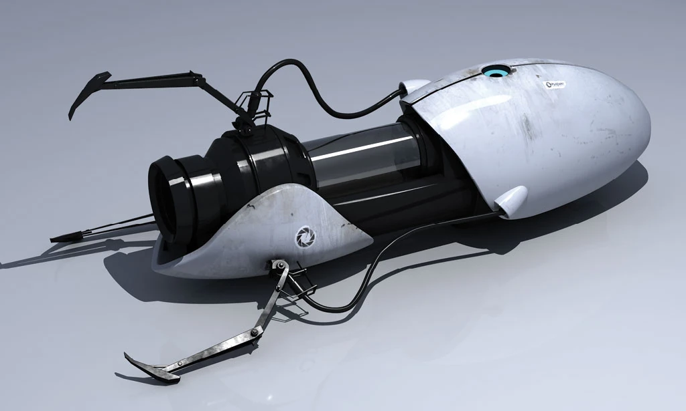
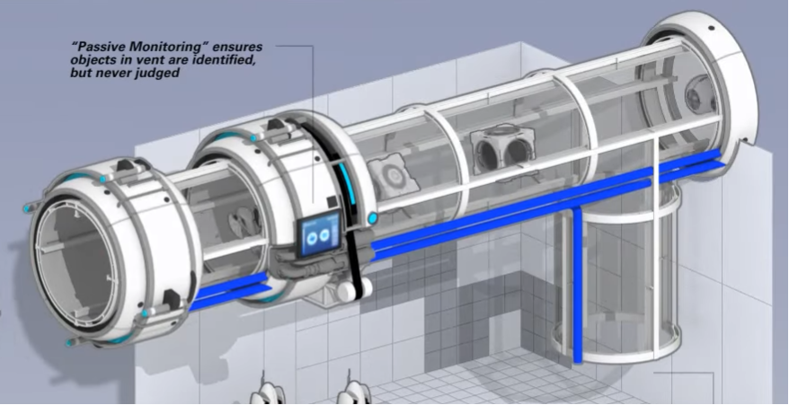

My work

GLaDOS
GLaDOS (Genetic Lifeform and Disk Operating System) is an artificial intelligence created by
Aperture Science. She is the overseer and highest of authorities of the Enrichment Center.

Handheld Portal Device
he Aperture Science Handheld Portal Device, is an experimental tool used to create two
portals through which objects can pass.

Turret
The Aperture Science Sentry Turret, is a Personality Construct-based gun platform used throughout the Aperture Science Enrichment Center.

Light Bridge
The Aperture Science Hard Light Bridge made from natural natural light. If you rubbed your cheek on one, it would be like standing outside with the sun.

Excursion Funnel
The Aperture Science Excursion Funnel is a testing element used in the Enrichment Center. The Excursion Funnel is powered by a round emitter placed on a wall.

Pneumatic Diversity Vent
The Aperture Science Pneumatic Diversity Vent is a suction and directional component for the Tube Network used throughout the Aperture Science Enrichment Center.